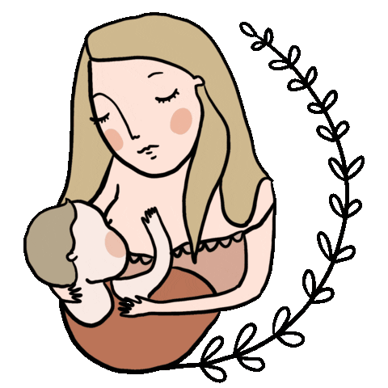

imagenes de lactancia
Haz click para saber mas sobre la lactancia materna
parrafo 1 parrafo 2 parrafo 3La mala nutrición durante las primeras etapas del ciclo de vida puede conducir a daños extensos e irreversibles en el crecimiento físico y el desarrollo del cerebro. En cambio, la buena nutrición tiene un efecto positivo. La lactancia materna es la forma óptima de alimentar a los bebés, ofreciéndoles los nutrientes que necesitan en el equilibrio adecuado, así como ofreciendo protección contra las enfermedades. imagen de lactancia
la importancia de la lactancia
parrafo 1
La superioridad de la leche materna viene determinada especialmente por su composición, que se adapta a las necesidades del lactante y varía a lo largo de la lactancia, a lo largo del día, e incluso a lo largo de cada toma. El calostro es la primera leche, es más amarillenta contiene gran cantidad de proteínas e inmunoglobulinas (sustancias antiinfecciosas) y aporta gran cantidad de calorías en pequeño volumen. Es el alimento ideal para los primeros días, ya que el tamaño del estómago del bebé es pequeño y necesita realizar tomas frecuentes de poca cantidad. La composición de la leche también cambia durante la toma. En la primera parte de la toma, la leche contiene más agua y azúcar, así satisface la sed del bebé. Después, aumenta gradualmente, su contenido en grasa, aportando más calorías que sacian a la criatura. Por esto es importante y recomendado que el bebé termine de mamar de un pecho antes de ofrecerle el otro (cuando suelte el primero de forma espontánea), y si tiene hambre lo aceptará. Para evitar ingurgitación o retenciones, es aconsejable comenzar cada toma por el pecho del que no mamó o del que mamó menos en la toma anterior.
parrafo 2
Parte de los efectos beneficiosos que la lactancia materna ejerce sobre el desarrollo psicomotor del bebé no están relacionados directamente con la composición de la leche sino con el acto de amamantar que conlleva una proximidad y contacto estrecho y frecuente madre-hijo: el intercambio de miradas, el bebé se siente abrazado, la succión directa del pecho materno que provoca en la madre la síntesis de hormonas como la oxitocina y la prolactina, todo lo cual establece un vínculo especial que se traduce en niños más equilibrados psicológicamente y con menos problemas de conducta, hiperactividad, depresión y ansiedad, incluso en la adolescencia. Por todas estas razones y de acuerdo con la Organización Mundial de la Salud (OMS) y la Academia Americana de Pediatría (AAP), el Comité de Lactancia de la Asociación Española de Pediatría recomienda la alimentación exclusiva al pecho durante los primeros 6 meses de vida del niño y continuar con el amamantamiento junto con otros alimentos que complementen la alimentación hasta los 2 años o más, mientras madre e hijo lo deseen.
parrafo 3
Si la madre y el bebé están sanos, independientemente del tipo de parto que hayan tenido, es importante que el recién nacido sea colocado encima de su madre, en estrecho contacto piel con piel y permitirles a ambos mantener dicho contacto, sin interrupciones ni interferencias, al menos hasta que el bebé haya hecho la primera toma de pecho, e idealmente durante todo el tiempo que madre a hijo deseen. El recién nacido tienen unas capacidades innatas que, si le dejamos, pone en marcha al nacimiento. Puesto boca abajo sobre el abdomen de su madre, gracias a sus sentidos (sobre todo el tacto y el olfato) y a sus reflejos, es capaz de llegar por sí sólo al pecho materno. Irá reptando hasta él, lo olerá, lo tocará con las manos y posteriormente con la boca y finalmente, será capaz de agarrarse al pecho espontáneamente, con la boca totalmente abierta, abarcando el pezón y
/>lista de cosas
cosas que los gatos aman:
- menta gatuna
- pollo
- pescado
cosas que los gatos odian:
abrazos- besos
- cosquillas
 />
/>